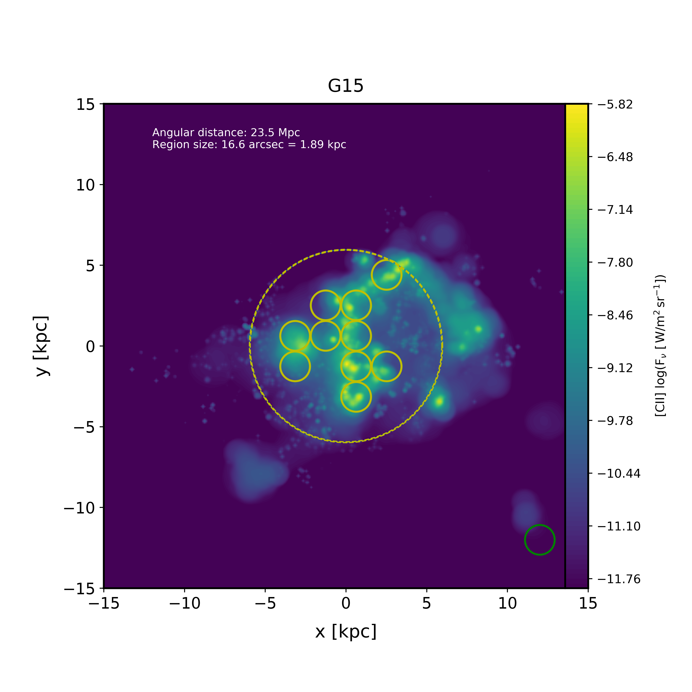

{kind=link}
What the code does¶
SÍGAME is a module written in python that can predict line emission in the far-infrared (FIR) of galaxies at any redshift. Input to the code is: A table of particle/mesh data for a galaxy taken from a cosmological simulation snapshot. Output from the code is: A 3D datacube of line flux in spatial coordinates in kpc (x,y) and velocity coordinates (v, e.g. from -400 to 400 km/s). At this point, SÍGAME is set up to do [CII], [NII] (at 122 and 205 microns), [OI] (63 microns), [OIII] (88 microns) and CI (at 609 and 369 microns).
An example¶
Below is an example of what SÍGAME can do. It’s a map of a nearby galaxy in the fine-structure [CII]158 micron emission line. The input to SÍGAME in this case was a snapshot volume at redshift z=0 from the MUFASA suite of cosmological simulations [Davé et al 2016].
See also http://kpolsen.github.io/sigame/ for a more general description.
Code structure¶
Input to SÍGAME
Particle data of gas and stars for one or more model galaxies extracted from a cosmological simulation volume. The gas particle data must include: position, velocity, mass, density, temperature, metallicity (at least an overall metallicity), molecular/dense gas mass fraction and instantaneous star formation rate. The star particle data must include: position, velocity, mass, age and metallicity.
Output from SÍGAME
3D datacubes in space (x,y) and velocity (v) of line emission, mass and metallicity. Three datacubes will be created for each galaxy, corresponding to the three ISM phases considered: Giant Molecular Clouds (GMCs), Diffuse Neutral Gas (DNG) and Diffuse Ionized Gas (DIG).
Steps to create output datacubes
SÍGAME contains 5 basic steps to calculate the line emission from a galaxy along a given line of sight and across a specified axis of velocity. These 5 steps are summarized in the flow diagram below. Step 1 and 2 have already been finished, with one test galaxy at z=0, in the release version of the code. The remaining 3 steps can be carried out as described in Quickstart; “Create datacubes of line emission”.
Data flow
While deriving datacubes of derived values of e.g. line emission from the raw particle data, SÍGAME stores several temporary files in the folder sigame/temp/. These files can either be deleted after or used as checkpoints to redo part of the calculation only. In the flow diagram below, square boxes indicate when and where files are stored within sigame/temp/z0_data_files/. In total 5 files are generated for each galaxy in addition to the 3 data files used as input to the code:
{kind=link}
Tributes¶
This python module makes use of the following software, publicly available elsewhere:
Contact¶
For questions, contact Karen at: kpolsen at protonmail.com